Измерение емкости конденсаторов с помощью Arduino
В данном материале мы научимся использовать Arduino для измерения емкости конденсаторов. Это может пригодиться, если конденсатор не имеет маркировки.
Шаг 1: Что такое емкость?
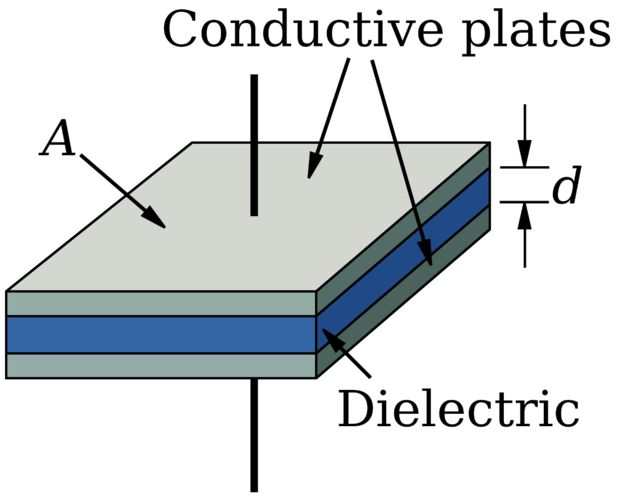
Емкость – это способность объекта накапливать электрический заряд. Разумно предположить, что таким объектом выступает конденсатор.
Конденсатор, который запасает данный заряд в электрическом поле между двумя проводящими обкладками, называется конденсатор с пластинчатыми обкладками. Не токопроводящий материал, который располагается между этими двумя обкладками, называется диэлектриком. Диэлектрики изменяют величину заряда, которую может хранить конденсатор, и фактически, определяют, для каких целей конденсатор будет использоваться впоследствии (напр., в высокочастотной схеме, схеме с повышенным напряжением и т.д.).
Равенство для определения емкости конденсатора с пластинчатыми обкладками выражается следующим образом:
C = (εS)/d
где
ε – это магнитная проницаемость свободного места или диэлектрика,
S – это площадь поверхности перекрытия между обкладками, и
d – расстояние между обкладками.
Шаг 2: Как измерить емкость?
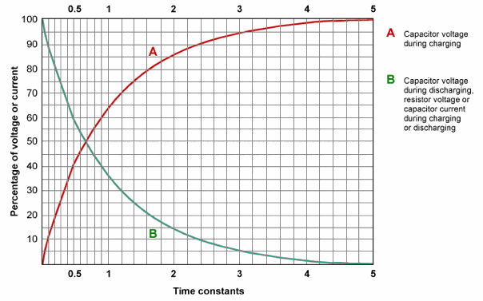
А - Напряжение конденсатора во время заряда
В - Напряжение конденсатора во время разряда, напряжение резистора или ток конденсатора во время заряда или разряда.
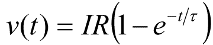
RC-цепочка (Резистор-Конденсатор) имеет свойство, известное как "RC временная постоянная" или τ ("тау"):
τ = RC
τ может быть упрощена из более сложного выражения (показано на рисунке выше) для представления времени, которое требуется для заряда конденсатора через резистор, для достижения 63,2% от его полного напряжения. Данная величина может быть измерена по времени, которое потребуется, чтобы конденсатор достиг значения 36,8% от его полного напряжения при разряде.
Микроконтроллер Arduino будет запрограммирован на величину времени, которое потребуется для достижения конденсатором величины 63,2% от его полного заряда. Далее будет использоваться выражение для τ для вычисления величины емкости, поскольку значение номинала резистора нам известно.
Шаг 3: Используемые компоненты
Для проекта нам потребуется
- Микроконтроллер Ardunio
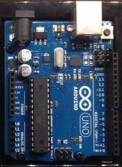
- Монтажная плата
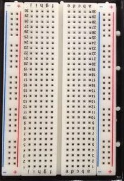
- Проволочные перемычки
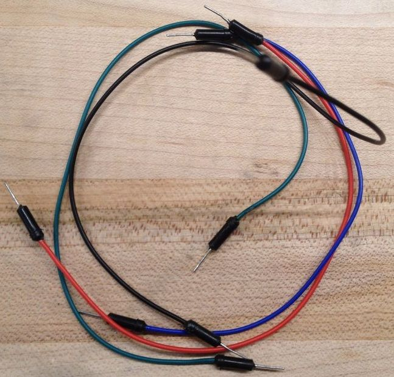
- Резисторы 220 Ом и 10 кОм
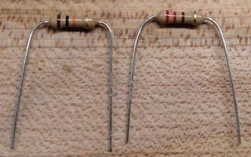
- Конденсатор неизвестной емкости
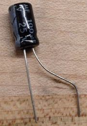
Шаг 4: Подключение
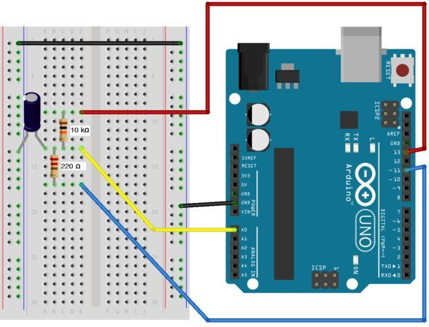
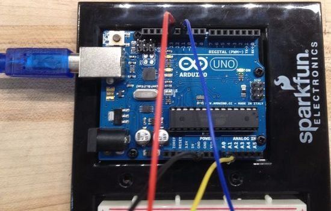
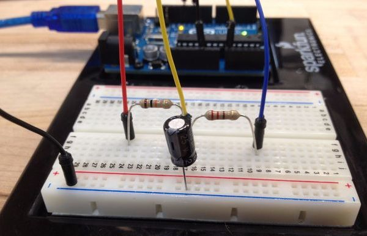
Подключение компонентов в данном проекте не представляет особых трудностей. Просто выполняйте подключение компонентов, согласно схемы.
ПРИМЕЧАНИЕ: Убедитесь в том, что серебряная полоска на конденсаторе (в случае использования биполярного конденсатора) подключается к земле.
ПРИМЕЧАНИЕ 2: Резистор номиналом 220 Ом и проводник, подключенные к выводу 11, не являются необходимыми, но рекомендуемыми, поскольку эта цепочка ускоряет время разряда.
Шаг 5: Загрузка кода и тестирование
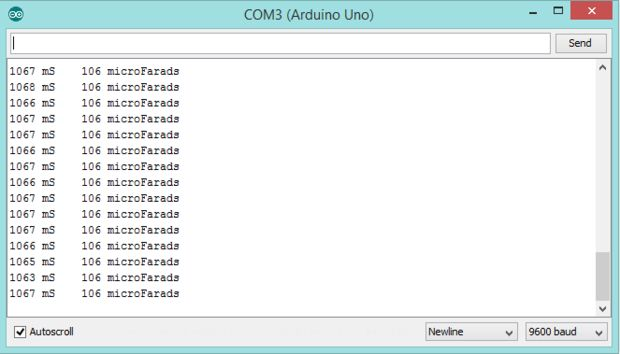
После надлежащей сборки схемы, загрузите код в ваш микроконтроллер Arduino. Код имеет комментарии, что позволяет облегчить понимание всего процесса измерения.
После загрузки кода, откройте Serial Monitor (Tools > Serial Monitor – Инструменты > Монитор последовательного интерфейса) для просмотра измерения конденсатора неизвестной емкости.
Первая величина показывает, какое время требуется конденсатору для достижения величины 63.2% от его полного заряда. Вторая величина – это измеренная емкость в "нано" или "пико" фарадах.
Программа циклически тестирует конденсатор, поэтому измеренные значения могут незначительно отличаться. Лучше всего использовать усредненное измеренное значение.
ПРИМЕЧАНИЕ: Данная схема измерения наиболее пригодна для конденсатора емкостью от 1 до 3500 мкФ.
Arduino Sketch
#define analogPin 0 // analog pin for measuring capacitor voltage #define chargePin 13 // pin to charge the capacitor - connected to one end // of the charging resistor #define dischargePin 11 // pin to discharge the capacitor #define resistorValue 10000.0F // change this to whatever resistor value you are using // F formatter tells compliler it's a floating point value unsigned long startTime; unsigned long elapsedTime; float microFarads; // floating point variable to preserve precision, make calculations float nanoFarads; void setup(){ pinMode(chargePin, OUTPUT); // set chargePin to output digitalWrite(chargePin, LOW); Serial.begin(9600); // initialize serial transmission for debugging } void loop(){ digitalWrite(chargePin, HIGH); // set chargePin HIGH and capacitor charging startTime = millis(); while(analogRead(analogPin) < 648){ // 647 is 63.2% of 1023, which corresponds to full-scale voltage } elapsedTime= millis() - startTime; // convert milliseconds to seconds (10^-3) and Farads to microFarads (10^6), net 10^3 (1000) microFarads = ((float)elapsedTime / resistorValue) * 1000; Serial.print(elapsedTime); // print the value to serial port Serial.print(" mS "); // print units and carriage return if (microFarads > 1){ Serial.print((long)microFarads); // print the value to serial port Serial.println(" microFarads"); // print units and carriage return } else { //if value is smaller than one microFarad, convert to nanoFarads (10^-9 Farad) //This is a workaround because Serial.print will not print floats nanoFarads = microFarads * 1000.0;/ multiply by 1000 to convert to nanoFarads(10^-9 Farads) Serial.print((long)nanoFarads); // print the value to serial port Serial.println(" nanoFarads"); // print units and carriage return } /* dicharge the capacitor */ digitalWrite(chargePin, LOW); // set charge pin to LOW pinMode(dischargePin, OUTPUT); // set discharge pin to output digitalWrite(dischargePin, LOW); // set discharge pin LOW while(analogRead(analogPin) > 0) // wait until capacitor is completely discharged { } pinMode(dischargePin, INPUT); // set discharge pin back to input }
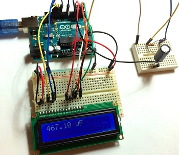
Принцип измерения емкости
Измерение емкости в данном случае основано на свойстве резисторно-конденсаторных (RC) цепей, которое носит название «постоянная времени». Постоянная времени RC-цепи определяется как время, необходимое для того, чтобы напряжение на конденсаторе достигло 63,2% от его напряжения при полной зарядке. Большие конденсаторы требуют больше времени для зарядки и, следовательно, имеют большие постоянные времени. Емкость в RC-цепочке связана с постоянной времени по уравнению:
Tc = RC.
Соответственно, емкость определится как:
C = Tc/R.
Ниже представлены три измерителя емкости, которые способны измерять более точно в микрофарадном, нанофарадном и пикофарадном диапазонах. Каждый измеритель емкости (кроме третьего) имеет RC-цепь с известными значениями резисторов и неизвестным значением конденсатора. Arduino будет измерять напряжение на конденсаторе и записывать время, необходимое для достижения 63,2% от его напряжения при полной зарядке (постоянная времени). Поскольку значение сопротивления уже известно, мы можем использовать приведенную выше формулу в программе, которая рассчитает неизвестную емкость.
Измеритель емкости от 0,1 мкФ до 3900 мкФ
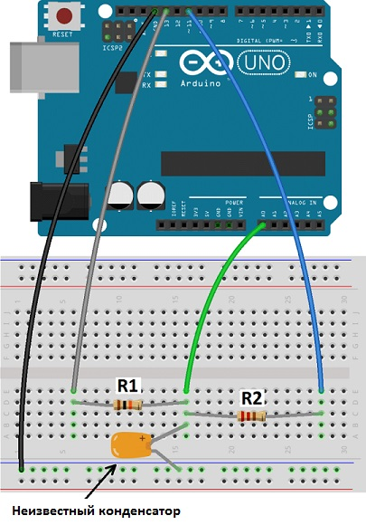
Схема измерителя емкости от 0,1 мкФ до 3900 мкФ на Arduino (R1 = 10 кОм, R2 = 220 Ом).
Скетч
#define analogPin 0
#define chargePin 13
#define dischargePin 11
#define resistorValue 10000.0F
unsigned long startTime;
unsigned long elapsedTime;
float microFarads;
float nanoFarads;
void setup()
{
pinMode(chargePin, OUTPUT);
digitalWrite(chargePin, LOW);
Serial.begin(9600);
}
void loop()
{
digitalWrite(chargePin, HIGH);
startTime = millis();
while(analogRead(analogPin) < 648)
{
}
elapsedTime= millis() - startTime;
microFarads = ((float)elapsedTime / resistorValue) * 1000;
Serial.print(elapsedTime);
Serial.print(" mS ");
if (microFarads > 1){
Serial.print((long)microFarads);
Serial.println(" microFarads");
}
else{
nanoFarads = microFarads * 1000.0;
Serial.print((long)nanoFarads);
Serial.println(" nanoFarads");
delay(500);
}
digitalWrite(chargePin, LOW);
pinMode(dischargePin, OUTPUT);
digitalWrite(dischargePin, LOW);
while(analogRead(analogPin) > 0)
{
}
pinMode(dischargePin, INPUT);
}
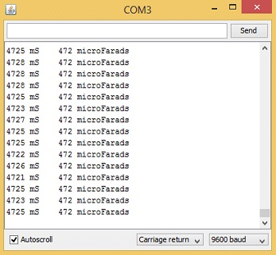
Пример результатов измерения емкости электролитического конденсатора 470 мкФ
В первом столбце показана постоянная времени конденсатора, а второй столбец – величина емкости. Единицы будут автоматически изменяться с микрофарад на нанофарады. Вы заметите, что с большими конденсаторами для Arduino требуется больше времени для вывода показаний. Это связано с тем, что более крупные конденсаторы имеют большие постоянные времени и поэтому требуют больше времени, чтобы достичь 63,2% от их напряжения при полной зарядке. Например, конденсатор емкостью 3900 мкФ может потребовать несколько минут для отображения следующего показания.
Измеритель емкости от 0,0047 мкФ до 180 мкФ
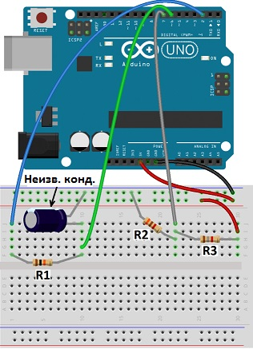
Схема измерителя емкости от 4,7 нФ до 3900 мкФ на Arduino (R1 = 10 кОм, R2 = 3,1 Ом, R3 = 1,8 кОм).
Скетч
const byte pulsePin = 2;
const unsigned long resistance = 10000;
volatile boolean triggered;
volatile boolean active;
volatile unsigned long startTime;
volatile unsigned long duration;
ISR (ANALOG_COMP_vect)
{
unsigned long now = micros ();
if (active)
{
duration = now - startTime;
triggered = true;
digitalWrite (pulsePin, LOW);
}
}
void setup ()
{
pinMode(pulsePin, OUTPUT);
digitalWrite(pulsePin, LOW);
Serial.begin(9600);
Serial.println("Started.");
ADCSRB = 0;
ACSR = _BV (ACI)
| _BV (ACIE)
| _BV (ACIS0) | _BV (ACIS1);
}
void loop ()
{
if (!active)
{
active = true;
triggered = false;
digitalWrite (pulsePin, HIGH);
startTime = micros ();
}
if (active && triggered)
{
active = false;
Serial.print ("Capacitance = ");
Serial.print (duration * 1000 / resistance);
Serial.println (" nF");
triggered = false;
delay (3000);
}
}
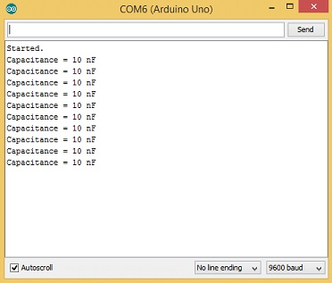
Пример результатов измерения емкости пленочного конденсатора 10 нФ
Измеритель емкости от 18 пФ до 470 мкФ
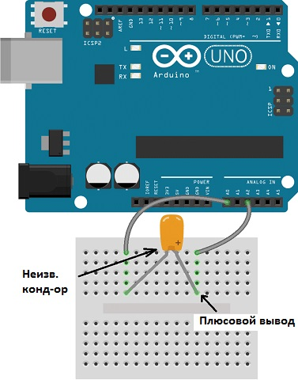
Схема измерителя емкости от 18 пФ до 470 мкФ на Arduino
Скетч
const int OUT_PIN = A2;
const int IN_PIN = A0;
const float IN_STRAY_CAP_TO_GND = 24.48;
const float IN_CAP_TO_GND = IN_STRAY_CAP_TO_GND;
const float R_PULLUP = 34.8;
const int MAX_ADC_VALUE = 1023;
void setup()
{
pinMode(OUT_PIN, OUTPUT);
pinMode(IN_PIN, OUTPUT);
Serial.begin(9600);
}
void loop()
{
pinMode(IN_PIN, INPUT);
digitalWrite(OUT_PIN, HIGH);
int val = analogRead(IN_PIN);
digitalWrite(OUT_PIN, LOW);
if (val < 1000)
{
pinMode(IN_PIN, OUTPUT);
float capacitance = (float)val * IN_CAP_TO_GND / (float)(MAX_ADC_VALUE - val);
Serial.print(F("Capacitance Value = "));
Serial.print(capacitance, 3);
Serial.print(F(" pF ("));
Serial.print(val);
Serial.println(F(") "));
}
else
{
pinMode(IN_PIN, OUTPUT);
delay(1);
pinMode(OUT_PIN, INPUT_PULLUP);
unsigned long u1 = micros();
unsigned long t;
int digVal;
do
{
digVal = digitalRead(OUT_PIN);
unsigned long u2 = micros();
t = u2 > u1 ? u2 - u1 : u1 - u2;
} while ((digVal < 1) && (t < 400000L));
pinMode(OUT_PIN, INPUT);
val = analogRead(OUT_PIN);
digitalWrite(IN_PIN, HIGH);
int dischargeTime = (int)(t / 1000L) * 5;
delay(dischargeTime);
pinMode(OUT_PIN, OUTPUT);
digitalWrite(OUT_PIN, LOW);
digitalWrite(IN_PIN, LOW);
float capacitance = -(float)t / R_PULLUP
/ log(1.0 - (float)val / (float)MAX_ADC_VALUE);
Serial.print(F("Capacitance Value = "));
if (capacitance > 1000.0)
{
Serial.print(capacitance / 1000.0, 2);
Serial.print(F(" uF"));
}
else
{
Serial.print(capacitance, 2);
Serial.print(F(" nF"));
}
Serial.print(F(" ("));
Serial.print(digVal == 1 ? F("Normal") : F("HighVal"));
Serial.print(F(", t= "));
Serial.print(t);
Serial.print(F(" us, ADC= "));
Serial.print(val);
Serial.println(F(")"));
}
while (millis() % 1000 != 0);
}
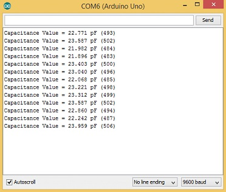
Пример результатов измерения емкости керамического конденсатора 22 пФ
Источники
arduino.cc - Capacitance Meter and RC Time Constants
cxem.net - Измерение емкости конденсаторов с помощью Arduino
digitrode.ru - Как с помощью Arduino измерить емкость конденсатора?